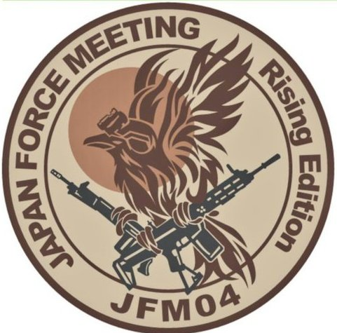
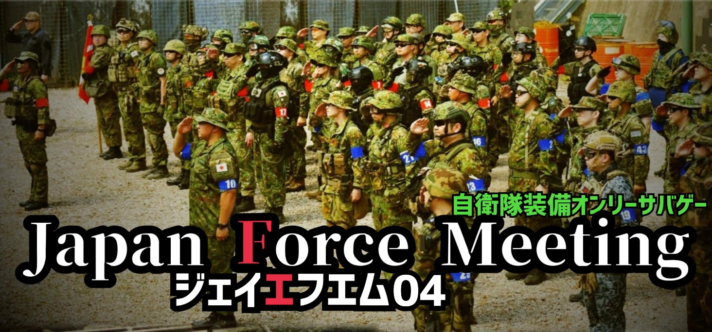
Operations Order // 大木島奪還作戦
大木島 奪還作戦 ── ブリーフィング
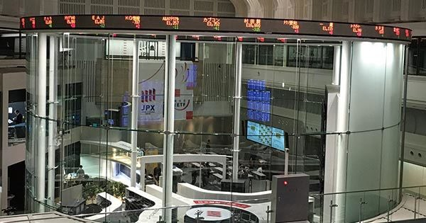
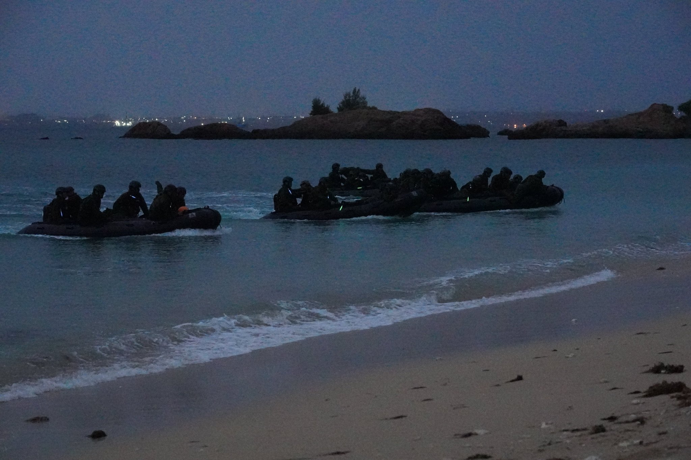
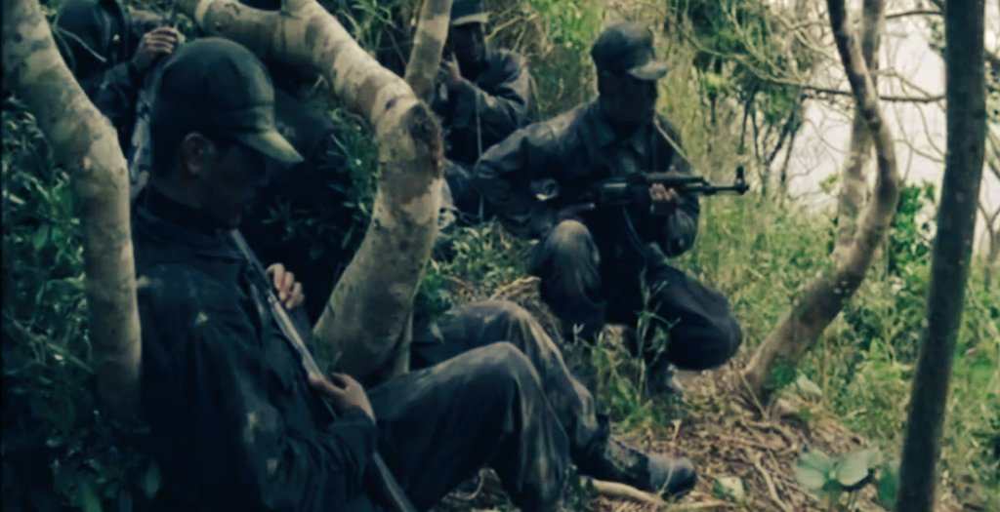
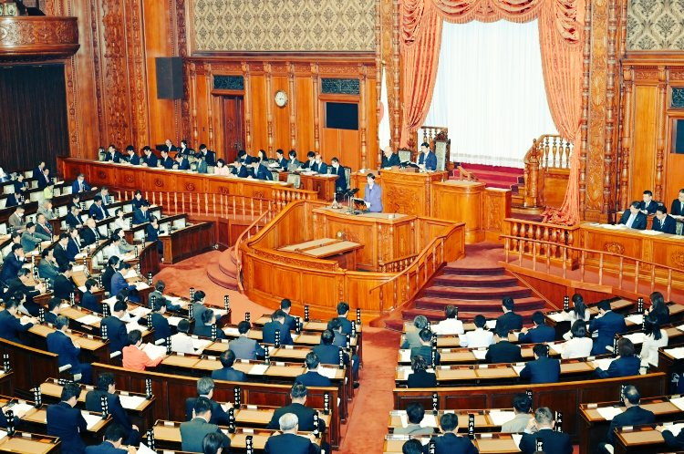
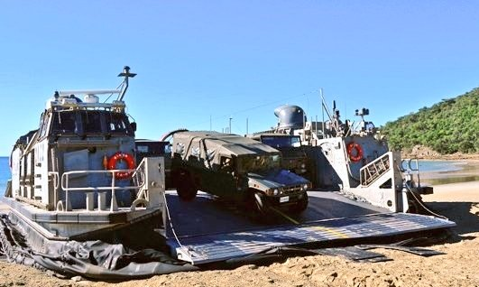
東亜連邦特殊部隊
大木島
第36戦闘団
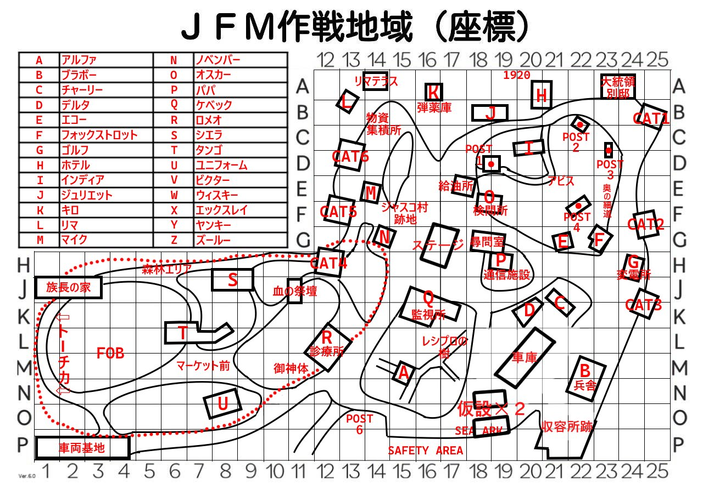
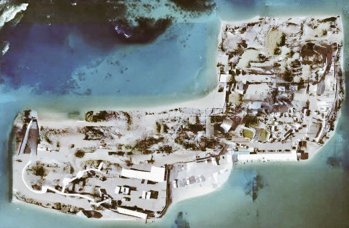
Red Force / 赤
第1中隊
陸自メイン・旧装備中心。各隊の特色を活かした迫力ある展開を。
小隊編成 / Platoons
無線網図（状況戦）/ Radio Net
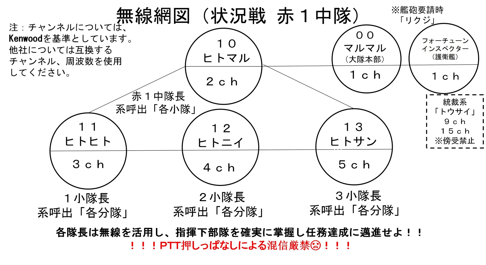
Blue Force / 青
第2中隊
陸自・空自・海自の混成。一体感を高めた編成。
小隊編成 / Platoons
無線網図（状況戦）/ Radio Net
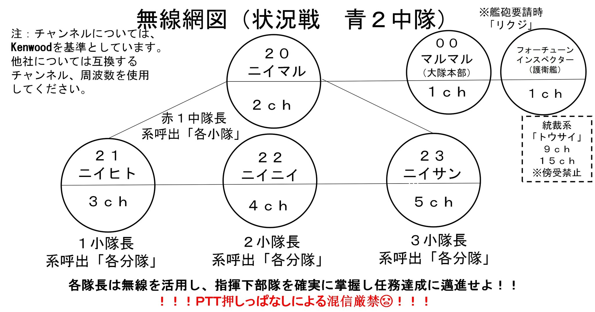
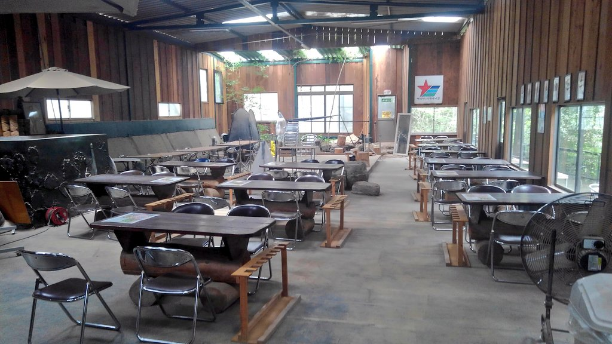
作戦を練り、親睦を深めて頂くための配置です。赤はセーフティ奥側、青は手前側へお願いします。
席は準備しますが、多くの方が参加されるため、お一人での参加の方は相席でお願いします。
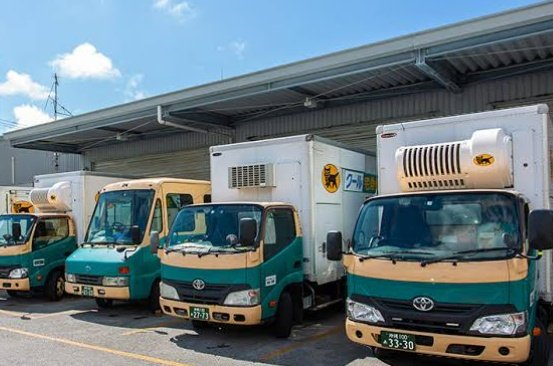
装備を軽くして行きたい方、新幹線・レンタカーで来られる方向け。前日に時間指定をして頂ければ、ヤマト運輸による配送が可能です。集荷も可能です。
配送を行う方は、運営（@HIRYU_TACTICS）までDMでご連絡ください。
JFMは、自衛隊への愛やリスペクトを持った仲間が集うイベントです。「形だけ合わせておけばいい」という考え方とは異なりますので、何卒ご理解をお願いいたします。
皆で楽しい『訓練』にしましょう！
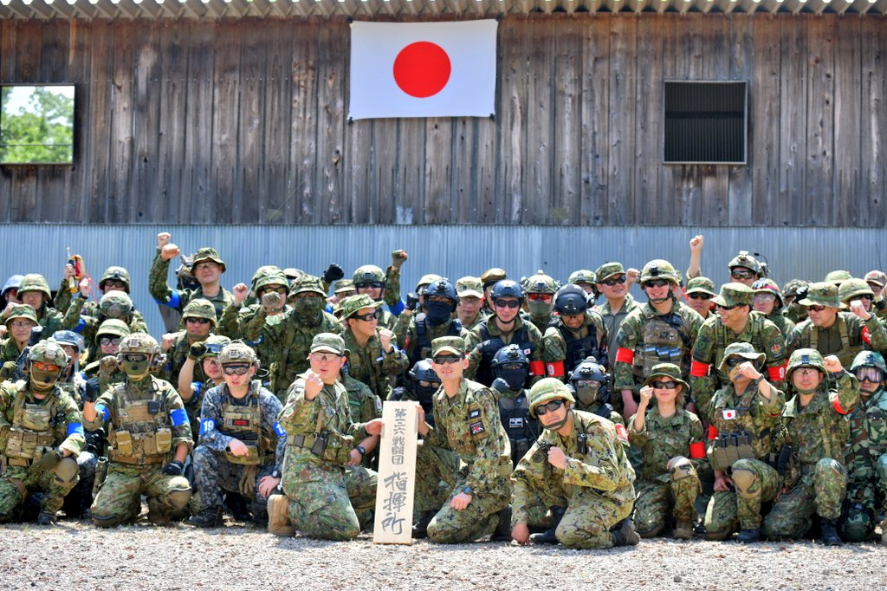
※ここでの「HP」はホームページ（＝サバゲーパラダイス公式サイト）を指します。
この作戦は実在の制度を下敷きにしたフィクションです。気になる方向けに、法的根拠を畳んでおきます（クリックで展開）。
島が占拠され人質がいるため、純粋な「避難誘導」ではなく 敵の制圧と住民救出が重なる。軍事作戦（自衛隊）と住民保護（自治体）が同時並行 ── これが任務③（民間人の救出・保護）の重み。
※実在の制度を参考にしたフィクションです。現実の運用・解釈とは異なります。